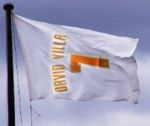
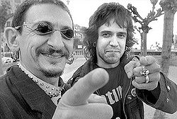
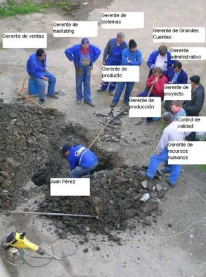

Patraix
 De: La Frikipedia, la enciclopedia extremadamente seria.
De: La Frikipedia, la enciclopedia extremadamente seria.
| De la serie ciudades del mundo:
|
| Patraix
|
| 
|

|
| (Bandera)
|
(Escudo de armas)
|
|
| Topónimo oficial
|
No es oficial, es bombero.
|
| País
|
Cazurrolandia España
|
| Código postal
|
No, es ZP
|
| Superficie
|
José elevado a la última potencia que da un total de 123,456,789.0 Terabytes en la Matrix o 123,456,789.0 metrónometros cuadrados
|
| Altitud
|
Actitud? Emprendedora
|
| Distancia
|
Al planeta Namek, un titipuchal de años luz, 7 horas en Aerocalifornicationa.
|
| Fundación
|
Con queso de tu fundillo
|
| Población
|
7 perros, 10 gatos, unas 934 personas, 10 no muertos; aliens: 5 por el culo te la hinco
|
| Gentilicio
|
Patraixan@
|
| Alcalde
|
No es alcalde, es al-caldo y en la Plaza 2 de Mayo
|
| Patraix si existe
|
Patraix es una ciudad imaginaria y que no existe existe de edá. Sus habitontos tienen un promedio de CI bajo el punto de congelación (en los grados de Kevin)

Ordenador ecológico biodegradable, con Windows Vista incorporado y de última generacion que venden en el quiosko de la esquina

Así resuelven resolvían las cosas en Patraix, de manera incivilizada y adulta.
Para reconocer a un habitante de patraix
- Lee un libro durante media hora para parecer intelectual, antes de darse cuenta de que lo tiene al reves.
- Se ríe en los programas de comedia, momentos después de que suenan las risas pregrabadas o enlatadas.
- Se lanza del techo intentando volar después de ver Superman.
- Ve a Superman en primer lugar.
- Se la pasa en la Frikipedia (Eso lo hacemos todos, no?).
- Se tatúa el nombre de su exnovi@, en el
antebrazo entrepierna.
- Lleva un letrero de "Salven a las focas" en una manifestación anti-abortista.
- Va y choca con el único poste de luz en todo el pueblo.
- Intenta seducir a la esposa de un Comandante de policía, enfrente de la comandancia.
- Lo logra
- Es atropellado por una carreta tirada por un burro.
- No puede poner números en un artículo.
- Lee el articulo de patraix hasta este punto.
- No puede entender en que consiste la Frikipedia, y escribe un articulo vomitívamente
serio cómico y/o informal.
- Se roba la identidad de un tipo, para devolverla al aburrirse.
- Intenta robarse un carro, que no tiene motor y/o llantas.
- Los teletubbies le presentan un desafío intelectual.
- Es usado como punto de referencia. Ej "Tres espacios a la derecha del subnormal aquel".
- Tiene sexo oral con "La Tigresa", gratis
- No se da cuenta de que la tipa que contrato para la noche es tipo, hasta el ultimo momento.
- Vota.
- Vota por el Dr. Simi.
- Le gusta Reik.
- No lo entiende.
- Un subnormal especialmente agudo habrá leído el fin de esta lista.
- Un patraixano piensa que la Frikipedia (enciclopedia extrmadamente seria es una copia de la Wikipedia.
- En patraix existe un coeficiente intelectual promedio de -1° (punto de congelación del CI)
- Un patraixano piensa que el Güindos es mejor que el Linux, y piensa que Internés Esplorer es mejor que el Firefox
- Un Patraixano de Patraix ha visitado Cazurrolandia
Qué es un patraixino...?
Se dice de una persona tonta de poca materia gris a la cual tu le dices que una cosa es negra (aun siendo totalmente lo contrario) y se cree que es negra, por muy avanzada que sea su edad o sus "estudios".
También se puede llamar patraixino a cualquier persona que es capaz de estar un año en el colegio y esforzarse mucho y llegar pensando que aprobará (aún teniendo suspendidas la mayoría de las asignaturas las evaluaciones anteriores) y llega y suspende y busca una razón de ser.
Patraixino se le puede llamar a cualquier panoli que veas por la calle con tanga y cara de subnormal (no que sea subnormal) a ese se le puede llamar tonto con todas sus letras.
También se le puede llamar patraixino a todo ese que sin hacer nada le salen bien las cosas (entonces se dice "no tiene suerte el patraixino ese").
Patraixino también puede ser ese que repite todo lo que dices o hace lo mismo que tu para tratar de no ser tonto convirtiéndose así en mas patraixino todavía por que ya lo dicen :
Gente ¿ilustre? de patraix
- Jorge de Patraix
- El vecino del primo del cuñao de Murcia de Pololoid
- ET(aun no se a demostrado)
- Yo
- El fari
- Manolo el del bombo ( no es coña va enserio)
- Mi vecino
- Su vecino
- El del quiosco de la esquina
- Fernado alonso
- Torrent
- Manolo Kabezabolo
Sabías que...
- Si dices Patraix
quince dieciséis diecisiete dieciocho diescinueve veinte veintiuna veintidos veintitres veces seguidas batirás el record mundial ?
- Es una baronía? De hecho, el barón de Patraix aún vive, y tiene una calle dedicada a él en esta ciudad.
- Ibertrola ha abierto una subestación eléctrica en Patraix que lleva desde 2005 explotando, provocando cáncer y tostando a sus habitantes las pocas neuronas que les quedan (ver el artículo de Ibertrola para más datos)?
- En Patraix hay una banda terrorista que busca la autonomía de la Republica Independiente de Patraix?
- En Patraix hubo un accidente de metro?
- Y uno de centímetro?
- y otro de Multímetro?
- En Patraix se usa tanga en las festividadees
 "Tú también puedes ser de patraix, txavalote"
 Instantánea de una obra de patraix en la que se puede apreciar esta filosofia
Vocabulario
El vocabulario de los de patraix es el de cualquier hijo del rock, aunque tiene sus variaciones.
- Fiesta = Botellón
- Racista = Facha
- Facha = Cerdo
- Bebida = Calimocho
- Truño = Mierda
- Estudiar = pecar
- Subestacion = cocteles molotov
- Rita = alkoholica de mierda
- Instituto = infierno
- Naci = malnacido
Filosofias de patraix (Algunas ya se han extendido por toda la peninsula)
- ...El cinco miran y uno trabaja™ es uno de las rasgos característicos de Patraix, que consiste en el aprovechamiento moderado de las horas de trabajo, en el que la supervisión es realizada por un número superior de empleados para facilitar así la localización de errores y la reparación de los mismos.
- ...Tarde, mal y a rastras :Doctrina de patraix según la cual hacer las cosas bien y en su plazo es de gilipollas o de extranjeros. Es aplicada en todos los sectores de la economía y a lo largo de la historia de España celosamente, como parte inseparable de la cultura y el acervo nacionales.
- Una variante de tarde mal y a rastras es la picaresca, consistente en lo mismo pero ingeniándoselas para que sean los otros los que trabajan. El español es por definición alérgico al trabajo, siempre y cuando, eso sí, no consideremos trabajo hablar de fútbol en el bar o opinar sobre el desarrollo de las obras (cualquier obra).
- ...El aprovexamiento de los guiris tambien es una de las mas caracteristicas , consiste en que cuando un guiri llega a patraix no se puede ir sin un par de botijos y la ¿tipica? figura del torito que cuesta 30 euracos..
Autor(es):
- Nexo
- Alex2610
- Azulejos
- Lunasfingo
- Narutoo
- AntiFriki
- El Rer 3
- Manamaster
- Cibercrank
- Lljosemll
Frikipedia 2005-2016, Licencia
GFDL 1.2 - Extraído por FrikiLeaks